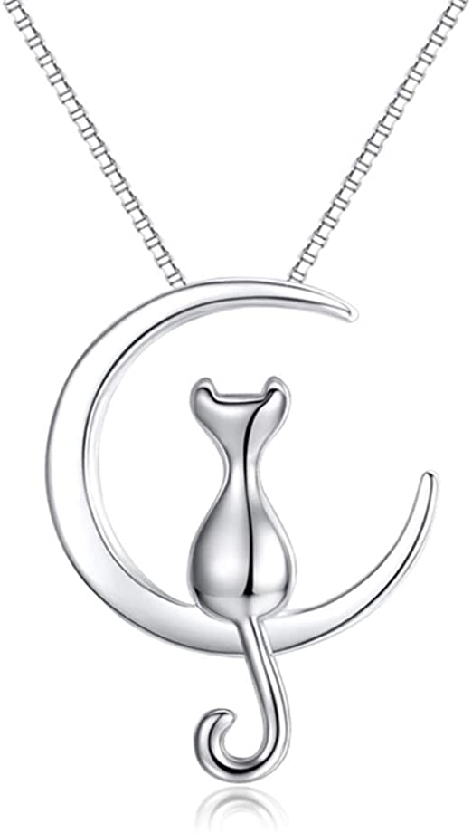

Un colgante es un adorno que cuelga de una joya, generalmente un collar, broche o pendiente.
Existen varios tipos de pendientes, de diferentes materiales y formas que provienen desde la antigüedad al estar asociados fundamentalmente a los collares y a base de piedras, huesos, conchas o dientes de animales hasta metales preciosos en civilizaciones del Antiguo Oriente y Egipto como la plata y el oro o piedras preciosas.
Los colgantes pueden tener varias funciones que suelen combinarse entre si:
Ornamentacion, identificacion (como simbolo religioso, sexual o cultural), proteccion (como amuleto o simbolo religioso), riqueza (con piedras preciosas) y condecoracion.
El Colgante De Las Abejas De Malia es una joya de oro que data de la epoca minoica que se encontro en el Yacimiento arqueologico de Malia, en la isla de Creta. En la actualidad forma parte del Museo Arqueologico de Heraclion.
Un colgante bicónico talayótico, también conocido como lágrima o cuenta bicónica talayótica es un objeto de bronce que se documenta en un gran número de yacimientos funerarios de la edad del bronce o periodo pretalayoticp de Menorca (Islas Baleares). Se trata de uno de los objetos aparecidos en contextos arqueológicos menorquines más enigmáticos debido a su forma y producción, así como por el desconocimiento que se tiene de su uso. Es, por lo tanto, un objeto arqueológico del cual todavía se sabe muy poca cosa.
